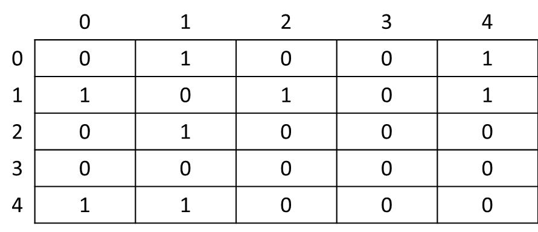
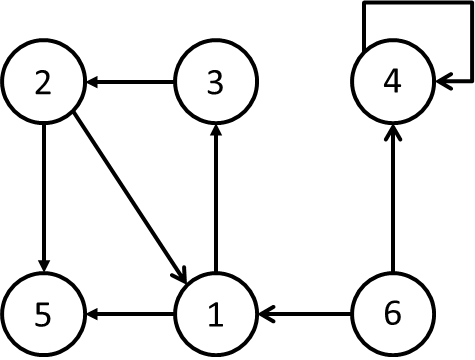

Disciplinas
-
ESTRUTURA DE DADOS. Concluído
Materiais
- Prof° Especialista: Gedson Faria, Graziela Santos de Araújo e Jonathan de Andrade Silva.
- Iniciado em quarta, 5 jun 2024, 16:13
- Estado Finalizada
- Concluída em quarta, 5 jun 2024, 17:45
- Tempo empregado 1 hora 32 minutos
- Avaliar 5,67 de um máximo de 10,00(56,67%)
Questionário ✅ ❌
Pergunta 1
No grafo orientado a seguir, temos representada uma cadeia de Markov ergódica. (As probabilidades foram omitidas do grafo).

Escolha uma opção: Verdadeiro ou Falso.
Resposta: Verdadeiro. ❌Resolução:
- Definição de Cadeia de Markov Ergódica:
- Uma cadeia de Markov é considerada ergódica se satisfaz as seguintes condições:
- Irredutibilidade: Todos os estados (vértices) são acessíveis a partir de qualquer outro estado (vértice).
- Aperiodicidade: Cada estado (vértice) não possui ciclos periódicos de qualquer comprimento.
- Análise do Grafo:
- Irredutibilidade:
- No grafo fornecido, todos os vértices (1, 2, 3, 4, 5) podem ser acessíveis a partir de qualquer outro vértice.
- Por exemplo, podemos ir do vértice 1 para o vértice 2, depois para o vértice 3, depois para o vértice 4 e finalmente para o vértice 5.
- Da mesma forma, podemos iniciar em qualquer outro vértice e seguir um caminho que nos leva a todos os outros vértices.
- Aperiodicidade:
- O grafo não possui ciclos periódicos de qualquer comprimento.
- Um ciclo periódico seria um caminho que se repete indefinidamente sem nunca chegar a um novo vértice.
- No grafo em questão, todos os caminhos eventualmente exploram todos os vértices, sem se prender a um ciclo repetitivo.
Pergunta 2
Escreva (apenas) uma função em Python, que dada uma matriz de adjacências M de um grafo não orientado G com n vértices e o número de um vértice v (sendo v um número inteiro entre 0 e n-1) calcula e retorna o grau do vértice v. Protótipo da função:
grauVertice(M, n, v)
Exemplo: Considere M abaixo, na qual n = 5 e v = 1. O grau de v é 3.
Resposta: mod4-avaliacao-q2.py ✅Resolução:
def grau(M, n, v):
if v < 0 or v >= n:
raise ValueError("Inválido")
degree = 0
for neighbor in range(n):
if M[v][neighbor] == 1:
degree += 1
return degree
# Example usage
M = [
[0, 1, 1, 0, 1],
[1, 0, 0, 1, 0],
[1, 0, 0, 1, 1],
[0, 1, 1, 0, 0],
[1, 0, 1, 0, 0]
]
n = 5
v = 1
degree = grau(M, n, v)
print(f"grau v {v}: {degree}")
Pergunta 3
Analise o grafo orientado a seguir. Cada vértice representa um site e uma aresta (a,b) indica que a recomenda b.
Pelo grafo, podemos afirmar que:
Escolha uma opção:
- a. Y e W recomendam, cada um, um único site com probabilidade 1.
- b. Z recomenda todos os demais sites com probabilidade 1/2.
- c. X recomenda quatro outros sites.
- d. X recomenda dois sites com probabilidade 1/3.
- e. Y recomenda todos os sites com probabilidade 1.
Pergunta 4
Google é uma empresa que fornece serviços e softwares on-line. A ferramenta de busca do Google foi criada por Larry Page e Sergey Brin. O algoritmo utilizado por ela é o Pagerank e seu nome homenageia um dos fundadores da empresa.
Escolha uma opção: Verdadeiro Falso.
Resposta: Verdadeiro. ✅Resolução:
- O nome "PageRank" homenageia Larry Page, um dos cofundadores do Google.
Pergunta 5
A matriz de incidência em um grafo orientado G=(V,E) é uma matriz B = (bij), de ordem |V|x|E|, tal que:
bij = -1 se a aresta j sai do vértice i, 1 se a aresta j entra no vértice i, 0 em caso contrário.

Qual o tamanho em número de células da matriz de incidência para o grafo acima? Escreva apenas o número sem espaço.
Resposta: 30. ❌Conclusão:
- Definindo a ordem da matriz:
- A ordem da matriz de incidência é definida pelo produto do número de vértices (V) e do número de arestas (E).
- No grafo em questão, podemos identificar:
- Vértices (V): 5 vértices (numerados de 1 a 5).
- Arestas (E): 6 arestas (representadas pelas setas entre os vértices).
- Cálculo do tamanho da matriz:
- Substituindo os valores na fórmula da ordem da matriz:
- Ordem da matriz B = |V| x |E| = 5 x 6 = 30
- Resultado:
- O tamanho da matriz de incidência para o grafo orientado fornecido é de 30 células.
- Observações:
- A matriz de incidência é uma matriz retangular com o número de linhas igual ao número de vértices e o número de colunas igual ao número de arestas.
- Cada célula da matriz de incidência representa a relação entre um vértice e uma aresta:
- -1 se a aresta sai do vértice
- 1 se asta não entra em nenhum vértice
- 0 se não há relação entre o vértice e a aresta
Pergunta 6
Um grafo G = (V,E) consiste em um conjunto de vértices (nós) e um conjunto de arestas. É correto afirmar que o grau de um nó é.
Escolha uma opção:
- a. a distância entre este nó e um outro nó qualquer do grafo.
- b. um número atribuído à aresta, também denominado de peso.
- c. o número de pares ordenados que formam a aresta.
- d. a posição deste nó em relação ao nó raiz do grafo.
- e. o número de arestas incidentes nesse nó.
Resolução:
- O grau de um nó (ou vértice) em um grafo é a quantidade de arestas que estão conectadas a esse nó.
Pergunta 7
Assinale e escolha as alternativas corretas a respeito do Pagerank:
Obs.: Cada alternativa errada que for marcada anula a pontuação que seria recebida por uma alternativa correta.
Escolha uma ou mais:
- a. Usa os conceitos de cadeia de Markov para qualificar a relevância de cada página analisada.
- b. Analisa os back links presentes em uma página.
- c. Calcula a importância de um site.
- d. Calcula a probabilidade de um usuário chegar a determinados sites ao clicar em back links frequentes.
Pergunta 8
A estrutura de dados grafo consiste em um conjunto de vértices (ou nós) e um conjunto de arestas. O grafo em que as arestas possuem um número ou peso associado a elas, é chamado de grafo:
Escolha uma opção:
- a. adjacente.
- b. predecessor.
- c. incidente.
- d. ponderado.
Pergunta 9
Na lista de adjacências correspondente ao grafo orientado a seguir, as entradas Adj[6] e Adj[4] são vazias.
Escolha uma opção: Verdadeiro ou Falso.
Resposta: Verdadeiro. ❌Pergunta 10
Os processos (.....) podem ser classificados em relação ao estado, podendo ser (.....) , em sequência, ou (.....) , em cadeia. Neste, é possível definir um conjunto enumerável ou finito, naquele, o caso é contrário. Em relação ao tempo pode ser classificado em (.....) e (.....) , no primeiro o tempo é infinito ou incontável, já no segundo, é finito ou contável.
Opções: discreto, discretos, estocásticos, contínuos, contínuo.
Resposta: ❌.Resolução:
Os processos discretos ❌ podem ser classificados em relação ao estado, podendo ser discreto ❌ , em sequência, ou estocásticos ❌ , em cadeia. Neste, é possível definir um conjunto enumerável ou finito, naquele, o caso é contrário. Em relação ao tempo pode ser classificado em contínuos ❌ e contínuo ❌ , no primeiro o tempo é infinito ou incontável, já no segundo, é finito ou contável.